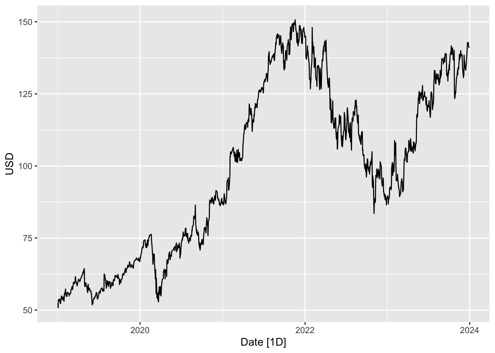
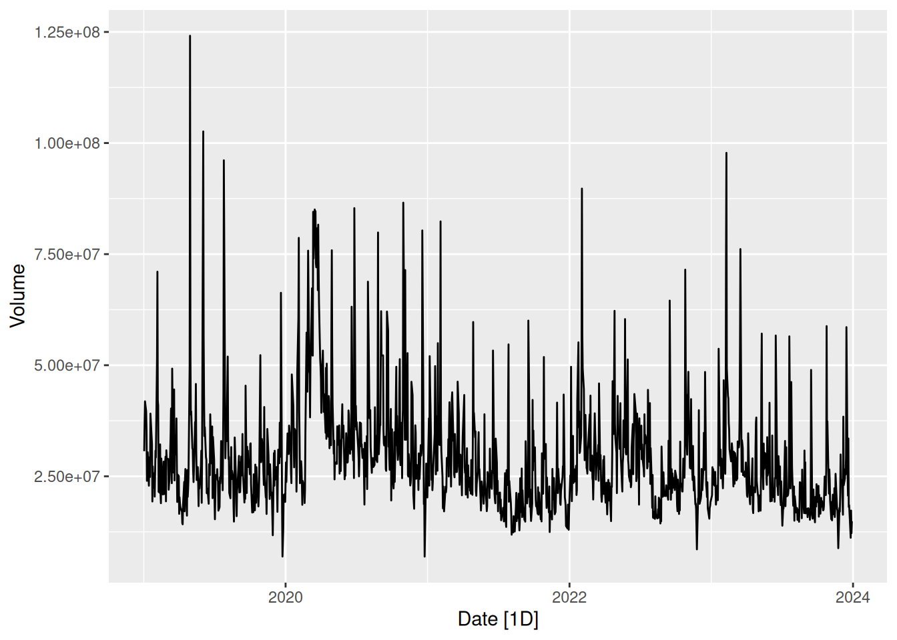
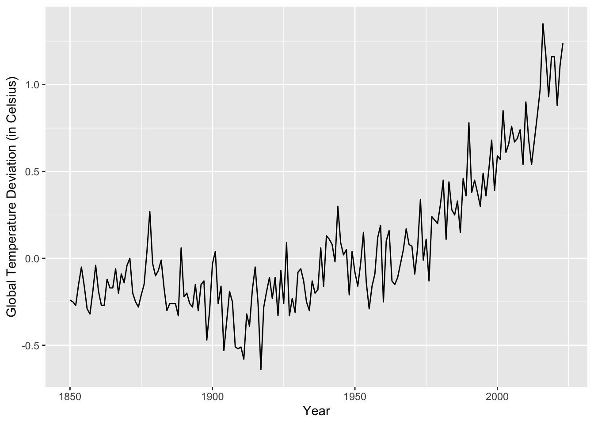

# Time Series Essentials
library(feasts) # Feature extraction & decomposition
library(fable) # Forecasting models (ARIMA, ETS, etc.)
library(fpp3) # Tidy time series dataseta
library(astsa) # Applied statistical TS methods from textbook
library(tseries) # Unit root tests & TS diagnostics
library(tsibbledata) # Curated TS datasets
library(quantmod) # Financial data retrieval
library(tidyquant) # Financial analysis in tidyverse
library(purrr) # Functional programming for TS pipelines
library(readr) # Efficient data importActivity1
Introduction to Applied Time Series
Time series analysis involves studying data points collected or recorded over time. Its applications range from economics to biology, where understanding patterns, trends, and predicting future events is crucial.
Mathematically, a time series \(\left\{X_t\right\}\) is a sequence of random variables indexed by time \(t\). A central concept is stationarity. A time series is (weakly) stationary if its statistical properties do not change over time.
Formally, \(\left\{X_t\right\}\) is weakly stationary if: \(\mathbb{E}\left[X_t\right]=\mu, \quad \operatorname{Var}\left(X_t\right)=\sigma^2, \quad\) and \(\quad \operatorname{Cov}\left(X_t, X_{t+k}\right)=\gamma_k\) for all \(t\). Stationarity is crucial for reliable modeling and forecasting, as many models assume constant mean and variance over time.
Recap: Multiple Linear Regression
Multiple linear regression models a response variable \(Y\) as a linear function of predictors \(X_1, X_2, \ldots, X_p:\)
\[ Y=\beta_0+\beta_1 X_1+\beta_2 X_2+\cdots+\beta_p X_p+\varepsilon \]
where \(\varepsilon\) is the error term. Regression analysis serves as a foundation for understanding relationships between variables, which extends into time series when considering trends and seasonality.
Using Tidyverts in the Tidyverse Ecosystem
The Tidyverts collection integrates time series analysis into the tidyverse framework, allowing seamless data manipulation and visualization with familiar syntax.
Understanding Time Series Data
Time series data for a single entity over time can be represented as a tsibble, which is a tidy data structure that inherently understands time.
example1 <- tsibble(
1 year = 2015:2019,
2 y = c(123, 39, 78, 52, 110),
3 index = year
)
4str(example1)- 1
- Define a time index from 2015 to 2019.
- 2
- Create corresponding observations for each year.
- 3
-
Construct a
tsibblewith year as the index. - 4
-
Use
str()to inspect the structure of thetsibble.
tbl_ts [5 × 2] (S3: tbl_ts/tbl_df/tbl/data.frame)
$ year: int [1:5] 2015 2016 2017 2018 2019
$ y : num [1:5] 123 39 78 52 110
- attr(*, "key")= tibble [1 × 1] (S3: tbl_df/tbl/data.frame)
..$ .rows: list<int> [1:1]
.. ..$ : int [1:5] 1 2 3 4 5
.. ..@ ptype: int(0)
- attr(*, "index")= chr "year"
..- attr(*, "ordered")= logi TRUE
- attr(*, "index2")= chr "year"
- attr(*, "interval")= interval [1:1] 1Y
..@ .regular: logi TRUEWorking with Real Datasets
Example: Google Stock Data
1google <- read_csv("data/google.csv")
google %>%
2 as_tsibble() %>%
3 autoplot(Close) +
4 ylab("USD")- 1
- Read Google’s stock data from a CSV file.
- 2
-
Convert the data frame into a
tsibble. - 3
-
Use
autoplot()to plot the closing prices over time. - 4
- Label the y-axis as “USD” for clarity.

google %>%
as_tsibble() %>%
autoplot(Volume)

- Convert the Google dataset into a tsibble.
- Plot the trading volume over time using
autoplot().
Example: Global Temperature Data
1astsa::gtemp_both %>%
2 as_tsibble() %>%
3 autoplot() +
4 labs(x = "Year", y = "Global Temperature Deviation (in Celsius)")- 1
-
Use
gtemp_bothdataset containing historical temperature data. - 2
-
Convert it into a
tsibbleformat. - 3
-
Create a time series plot with
autoplot(). - 4
- Label the axes to contextualize the data.
